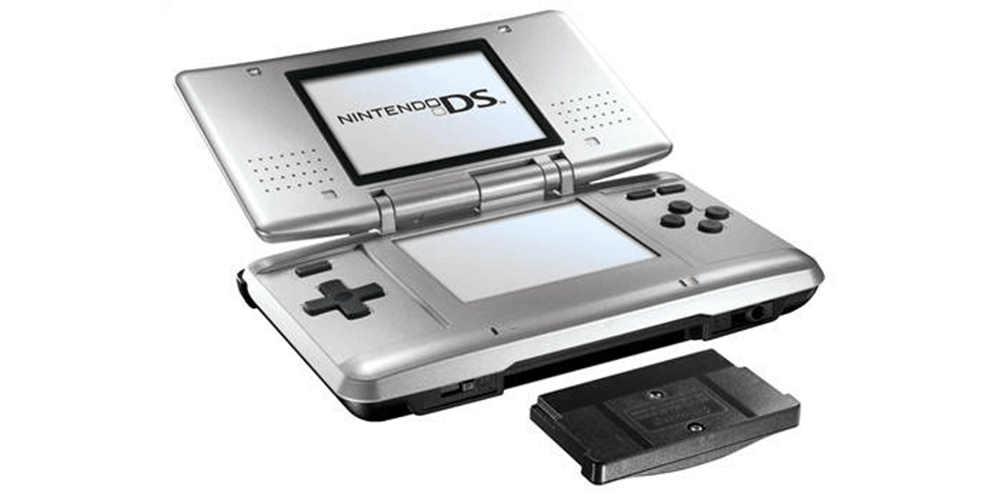

Ready Player One

1889
Fusajiro Yamauchi began manufacturing "Hanafuda" (flower cards) Japanese playing cards in Kyoto.
1981
Nintendo developed and distributed the coin-operated video game "Donkey Kong." This video game quickly became the hottest-selling individual coin-operated machine in the business.

1986
The Nintendo Entertainment System was launched in Europe and instantly became a major hit and a must-have in homes across the continent.

1989
The Game Boy, the first portable, handheld game system with interchangeable game cartridges, is introduced in Japan along with Tetris.

1996
Nintendo 64 launched in Japan on 23 June. Thousands lined up to be the first to experience the world's first 64-bit home videogame system. More than 500,000 systems were sold on the first day.

2004
January saw the worldwide announcement of Nintendo's ‘mystery system’: the Nintendo DS, a dual-screened handheld with Touch Screen technology.
2006
The year ended with the launch of Wii. The new home console with its innovative control system found an audience with both Nintendo fans and those who don't traditionally play videogames.

2012
2012 was a landmark year for Nintendo, seeing the launch of a new home console, Wii U, and also a new handheld system, Nintendo 3DS XL.